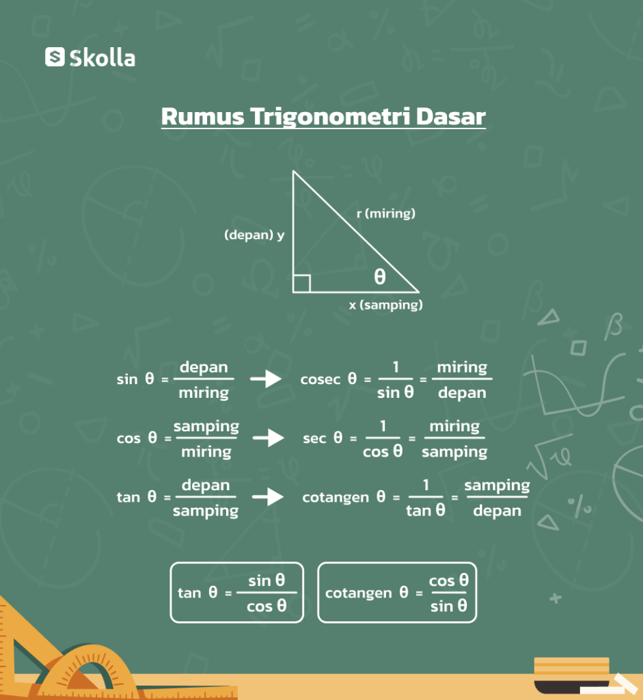

Persamaan Sinus
Jika sin x = sin a, maka:
- x = a + k . 360o
- x = (180o – a) + k . 360o
Persamaan trigonometri adalah persamaan matematika yang memuat fungsi trigonometri dari sudut yang belum diketahui nilainya. Persamaan ini mirip dengan persamaan linear atau kuadrat. Namun, yang membedakan adalah himpunan penyelesaiannya berupa besaran sudut.
Penyelesaian persamaan trigonometri dilakukan dengan cara mencari nilai sudut yang belum diketahui nilainya sehingga persamaan tersebut bernilai benar untuk suatu daerah tertentu.
Jika sin x = sin a, maka:
Jika cos x = cos a, maka:
Jika tan x = tan a, maka:
Berikut adalah visualisasi grafis dari persamaan trigonometri yang sering digunakan dalam analisis matematis:
Persamaan trigonometri memiliki banyak penerapan dalam berbagai bidang, termasuk fisika, teknik, dan astronomi. Misalnya, persamaan sinus dan cosinus digunakan untuk menentukan posisi objek dalam gerakan melingkar, sementara persamaan tangen sering digunakan dalam analisis sudut dalam segitiga.
Memahami bagaimana menyelesaikan persamaan trigonometri adalah keterampilan dasar yang penting bagi siapa saja yang belajar matematika tingkat lanjut.